fcmp ord 결합에서 freeze가 필요한 이유
NaN 검사 결합을 분석하며 poison의 전파와 refinement의 방향을 구분한다.
LLVM_Issue_49175.pdf의 전체 내용입니다. 설명·코드·표·검증 기록을 생략하지 않고 옮겼습니다. 그림 안의 문자 인식 결과에는 기호 오류가 있을 수 있어 이미지도 함께 제공합니다.
이 문서의 목차
LLVM Issue 분석 (#49175) / Missing FP optimization opportunities for fcmp ord operations / and refinement
LLVM Issue 분석 (#49175) Missing FP optimization opportunities for fcmp ord operations and refinement
라민우
페이지 배치·기호·도식 확인하기

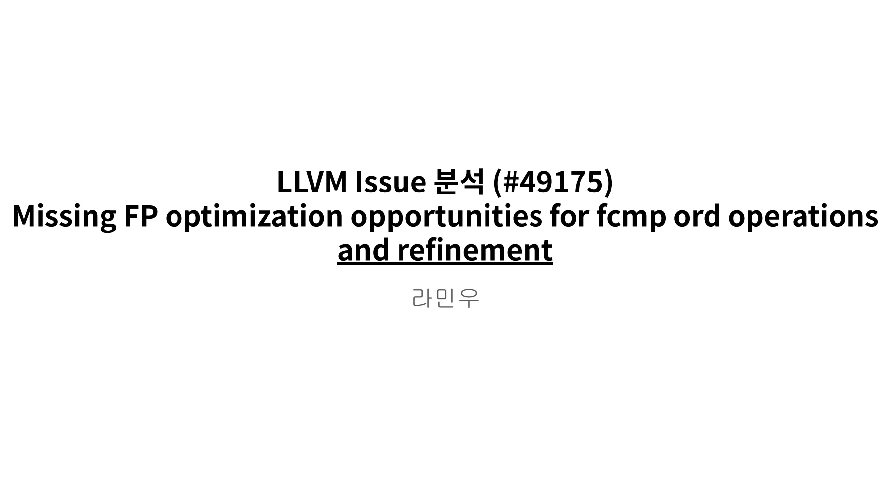
Background : fcmp ordered / unordered / fcmp ord : 둘 다 NaN 이 아니다. / fcmp uno : 하나라도 NaN 이다.
Background : fcmp ordered / unordered
fcmp ord : 둘 다 NaN 이 아니다.
fcmp uno : 하나라도 NaN 이다.
예) fcmp ord x, 0.0
“x 와 0.0 둘 다 NaN 이 아니다”
= “x 가 NaN 이 아니다.”
https://llvm.org/doxygen/InstrTypes_8h_source.html#l00750

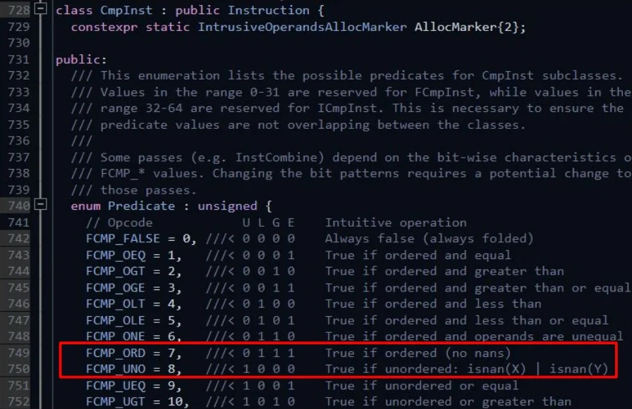
그림 안의 텍스트 · 문자 인식
class CmpInst : public Instruction {
729
constexpr static IntrusiveOperandsA1locMarker AllocMarker{2};
730
731
public:
732
/// This enumeration lists the possible predicates for CmpInst subclasses.
Values in the range 0-31 are reserved for FCmpInst, while values in the
733
734
range 32-64 are reserved for Icmpinst. This is necessary to ensure the
735
predicate values are not overlapping between the classes.
736
737
// Some passes (e.g. InstCombine) depend on the bit-wise characteristics o
738
/// FCMP_* values. Changing the bit patterns requires a potential change to
739
// / those passes-
enum Predicate : unsigned {
740 년
741
// Opcode
ULGE
Intuitive operation
742
FCMP_FALSE = 0, 1//<0000
Always false (always folded)
1< 00 0 1
743
FCMP_OEQ = 1,
True if ondered and equal
744
FCMP_OGT = 2,
<0 0 1 0
True if ordered and greater than
745
FCMP_OGE = 3,
0 0 1 1
True if ordered and greater than on equal
746
FCMP_OLT = 4,
True if ondered and less than
0 9
747
FCMP OLE
5
<0101
True
if ordered and less than on 'eaual
748
FCMP
ONE
;ㄷ
ondened and onerands ane uneaual
True if ordered (no nans)
74g
FCMP_ORD = 7,
///< 011
if unordered: isnan(x) | isnan(y)
750
FCMP UNO
8,
1//< 10 0 0
True
751
FCMP_UEQ =
9,
/<10 0 1
Tnue
if unondered or equal
FCMP UGT
10,
True
if unordered or greater than이미지에서 읽은 문자입니다. 코드 기호는 그림에서 확인하세요.
페이지 배치·기호·도식 확인하기

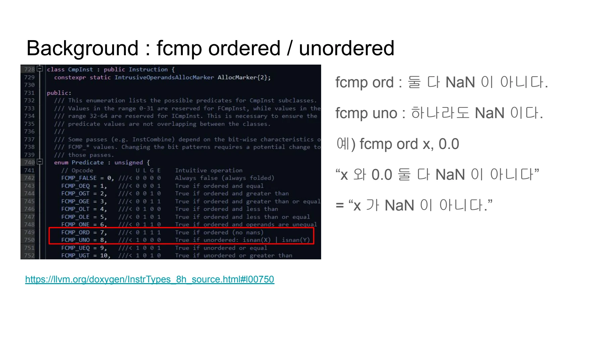
Issue (1)
Issue (1)

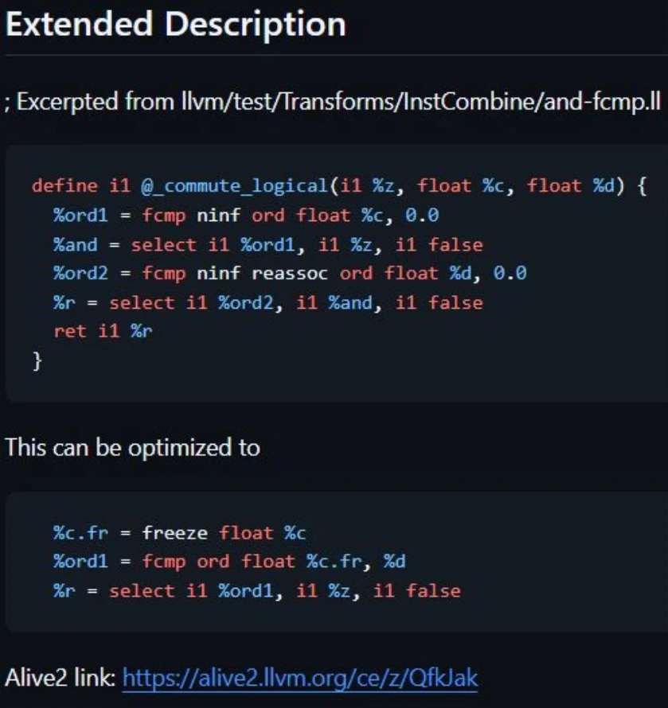
그림 안의 텍스트 · 문자 인식
Extended Description
: Excerpted from llvm/test/Transforms/InstCombine/and-fcmp.ll
define 11 e_commute_Jogical(11 %z, f1oat 8c, f1oat 8d) {
%ordl = fcmp ninf ord float %c, 0.0
%and = select 11 %ordl, 11 %, 11 false
%ord2 = fcmp ninf reassoc ord float %d, 0.0
%r = select 11 %ord2, 11 %and, 11 false
ret i1 %r
This can be optimized to
%c.fr = freeze float %c
%ord1 = fcmp ond float %c.fr, %d
%r = Select 11 %ord1, 11 %z, 11 false
Alive2 link https://alive2.llvm.org/ce/z/QfkJak이미지에서 읽은 문자입니다. 코드 기호는 그림에서 확인하세요.

그림 안의 텍스트 · 문자 인식
aqjune opened on Apr 4, 2021
이미지에서 읽은 문자입니다. 코드 기호는 그림에서 확인하세요.
페이지 배치·기호·도식 확인하기

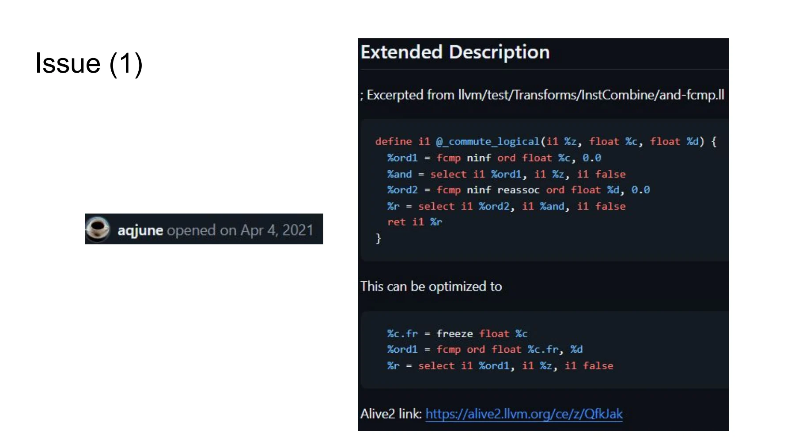
Issue (2) - alive2
Issue (2) - alive2

그림 안의 텍스트 · 문자 인식
define i1 asrc(i1 %, float %c, float %d) {
%ordl = fcmp ninf ord float %C, 0.0
%and = select i1 %ordl, i1 %, i1 false
%ord2 = fcmp ninf ord float %d, 0.0
%r = select i1 %ord2, 11 %and, i1 false
ret i1 %r
define i1 @tgt (11 %, float %c, float %d) {
9
%c.fr = freeze float %c
10
11
%ord1 = fcmp ord float %c.fr, %d
12
%r = select 11 %ord1, 11 %z, i1 false
13
ret i1 %r
14
15이미지에서 읽은 문자입니다. 코드 기호는 그림에서 확인하세요.
페이지 배치·기호·도식 확인하기

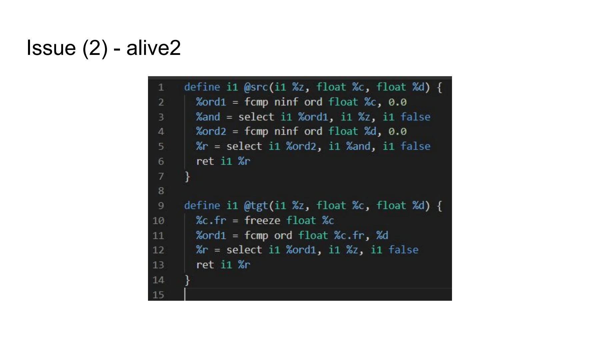
Issue (2) - alive2 / ninf ? -> ‘만약 Inf라면, 이 명령의 결과는 / poison이 된다’
Issue (2) - alive2
ninf ? -> ‘만약 Inf라면, 이 명령의 결과는 poison이 된다’
float -> 32B.
tmi#1) type 엔 float 뿐만 아니라 half,bfloat,double,... 그리고 Vector 도 올 수 있음.
tmi#2) fast-math flags 는 왜 필요한가?
부동소수엔 특수값 ±Inf, NaN, ±0 이 존재함.
=> 컴파일러는 위 특수 Case 를 전부 보존해야 함 => 최적화가 어려워짐.

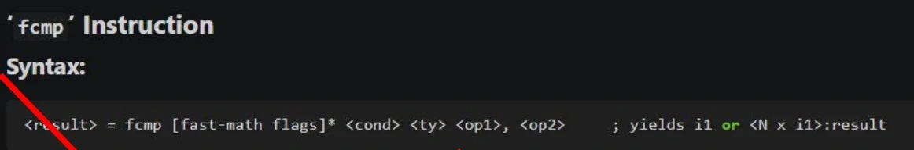
그림 안의 텍스트 · 문자 인식
' fcmp ' Instruction Syntax: sult〉= fcmp [fast-math flagsj* <condy <ty> <op1>, <op2> j yields i1 or <N x i1>: result
이미지에서 읽은 문자입니다. 코드 기호는 그림에서 확인하세요.

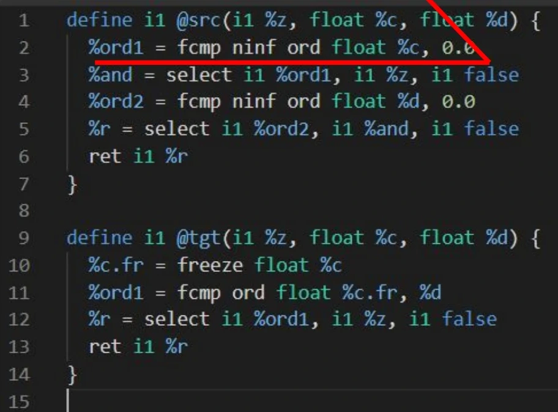
그림 안의 텍스트 · 문자 인식
define i1 @src(i1 %2, float %c, fluat %d) {
1
2
%ord1 = fcmp ninf ord float %c, 0.6
%and = select 11 %ord1, 11 %Z, 11 false
%ord2 =fcmp ninf ord float %d, 0.0
%r = Select 11 %ord2, i1 %and, i1 false
ret 11 %r
9
define i1 atgt(i1 %z, float %c, float %d) {
10
%c.fr = freeze float %c
11
%ord1 = fcmp ord float %c.fr, %d
12
%r = select 11 %ord1, 11 %z, i1 false
ret 11 %r
13
14
}
15이미지에서 읽은 문자입니다. 코드 기호는 그림에서 확인하세요.
페이지 배치·기호·도식 확인하기

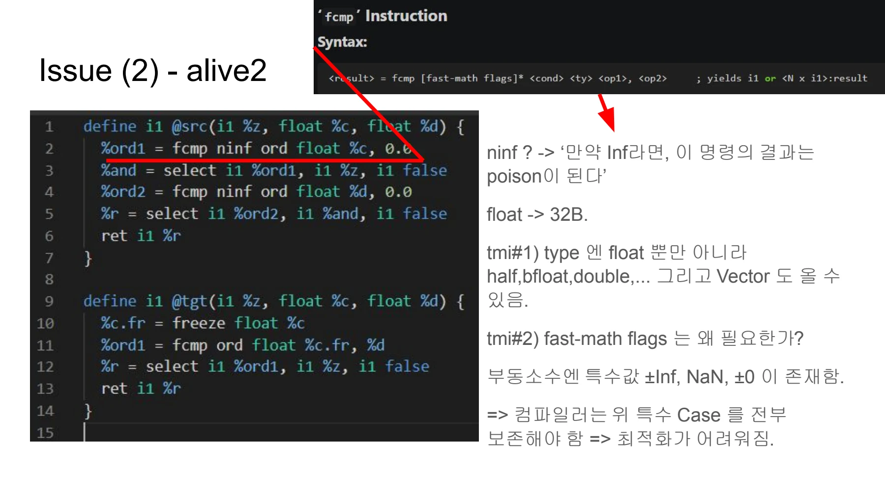
Issue (2) - alive2 / %c, 0.0 둘 다 NaN 이 아니면 ord1 은 / true. => %and 는 곧 %z.
Issue (2) - alive2
%c, 0.0 둘 다 NaN 이 아니면 ord1 은 true. => %and 는 곧 %z.

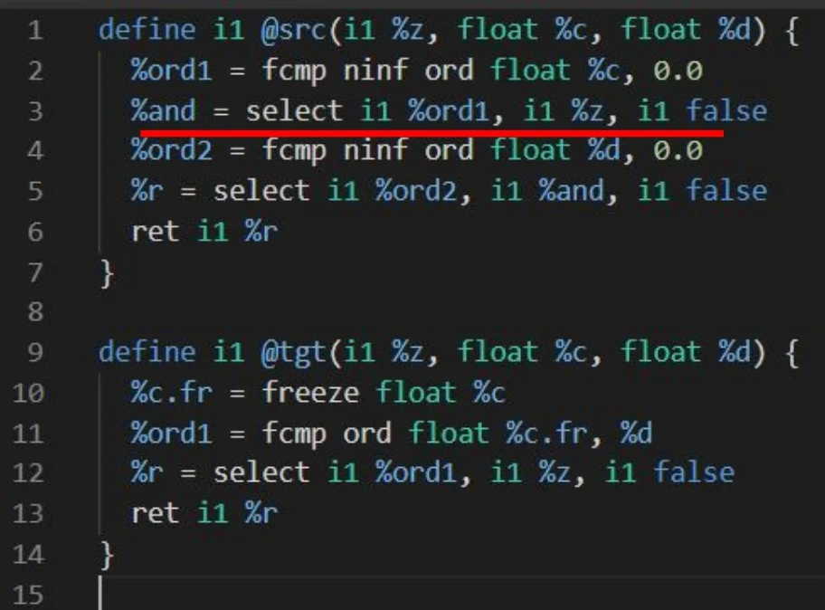
그림 안의 텍스트 · 문자 인식
define i1 @src(11 %, float %c, float %d) {
1
%ord1 = fcmp ninf ord float %c, 0.0
%and= select 11 %ord1, 11 %Z, i1 false
%ord2 = fcmp ninf ord float %d, 0.0
%r = Select i1 %ord2, 11 %and, i1 false
ret 11 %r
9
define i1 Otgt(11 %z, float %c, float %d) {
10
%c.fr = freeze float %c
11
%ord1 = fcmp ord float %c.fr, %d
12
%r = select 11 %ord1, 11 %z, i1 false
ret 11 %r
13
14
}
15이미지에서 읽은 문자입니다. 코드 기호는 그림에서 확인하세요.
페이지 배치·기호·도식 확인하기

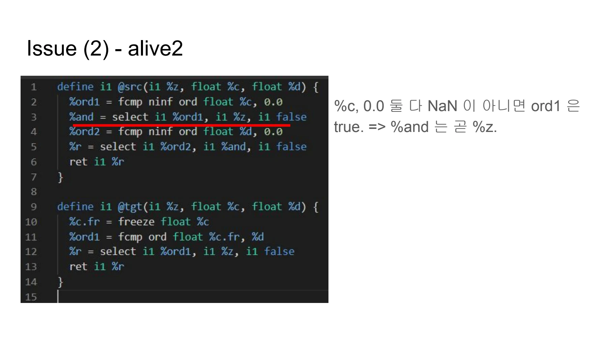
Issue (2) - alive2 / %d, 0.0 둘 다 NaN 이 아니면 ord2 는 / true.
Issue (2) - alive2
%d, 0.0 둘 다 NaN 이 아니면 ord2 는 true.

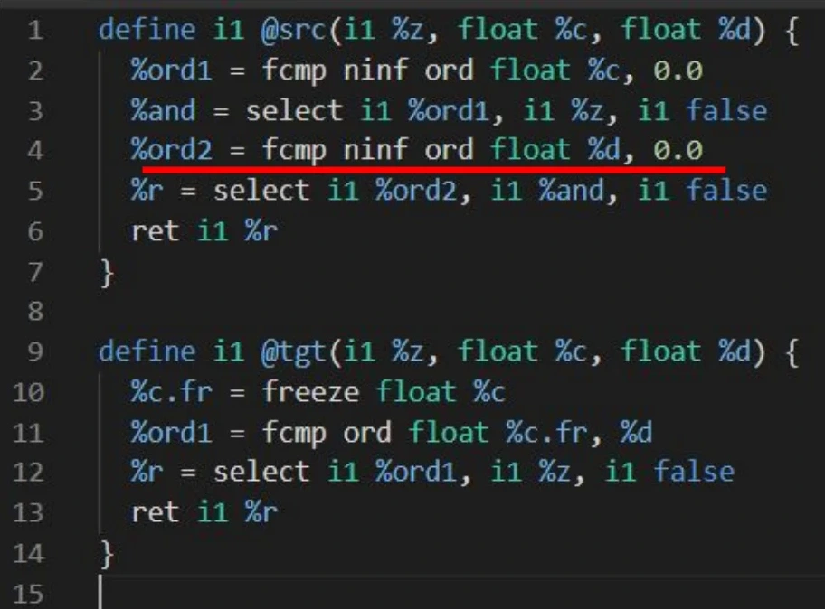
그림 안의 텍스트 · 문자 인식
define i1 @src(11 %, float %c, float %d) {
1
%ord1 = fcmp ninf ord float %c, 0.0
%and = select 11 %ord1, 11 %, i1 false
%0rd2 = fcmp ninf ord float %d, 0.0
%r = select 11 %ord2, 11 %and, i1 false
ret 11 %r
9
define i1 @tgt(11 %z, float %c, float %d) {
10
%c.fr = freeze float %c
11
%ord1 = fcmp ord float %c.fr, %d
12
%r = select 11 %ord1, 11 %, i1 false
ret 11 %r
13
14
}
15이미지에서 읽은 문자입니다. 코드 기호는 그림에서 확인하세요.
페이지 배치·기호·도식 확인하기

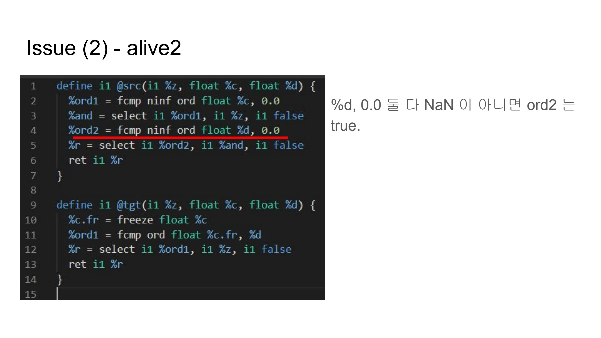
Issue (2) - alive2 / %d, 0.0 둘 다 NaN 이 아니면 ord2 는 / true. => %r 은 %and
Issue (2) - alive2
%d, 0.0 둘 다 NaN 이 아니면 ord2 는 true. => %r 은 %and

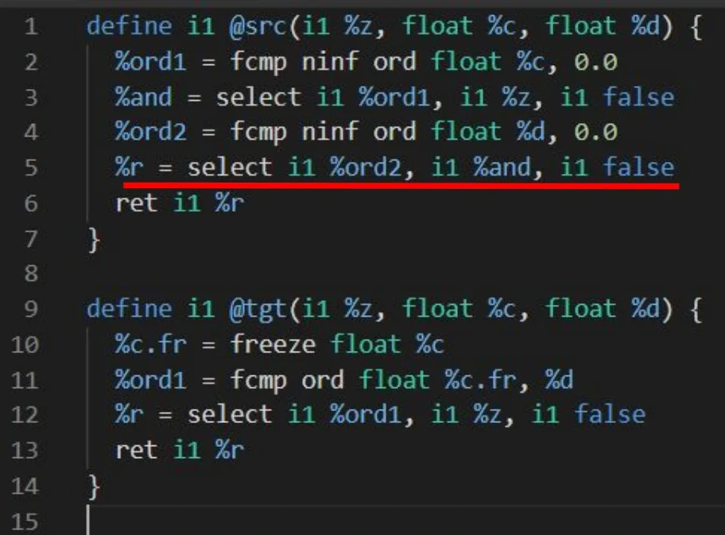
그림 안의 텍스트 · 문자 인식
define i1 @src(11 %, float %c, float %d) {
%ord1 = fcmp ninf ord float %c, 0.0
%and = select 11 %ord1, 11 %, i1 false
%ord2 =fcmp ninf ord float %d, 0.0
%r = select i1 %ord2, i1 %and, i1 false
ret 11 %r
9
define i1 Otgt(11 %z, float %c, float %d) {
10
%c.fr = freeze float %c
11
%ord1 = fcmp ord float %c.fr, %d
12
%r = select 11 %ord1, 11 %, i1 false
ret 11 %r
13
14
}
15이미지에서 읽은 문자입니다. 코드 기호는 그림에서 확인하세요.
페이지 배치·기호·도식 확인하기

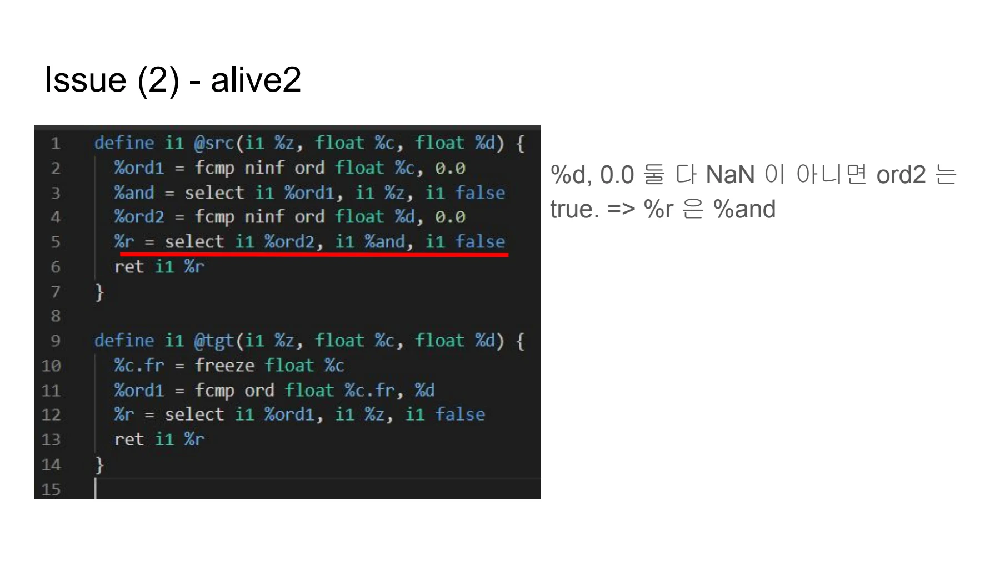
Issue (2) - alive2 / “%c 와 %d 가 NaN 이 / 아니라면, %z 를
Issue (2) - alive2
“%c 와 %d 가 NaN 이 아니라면, %z 를 반환한다.” (아닌경우 false 를 반환)

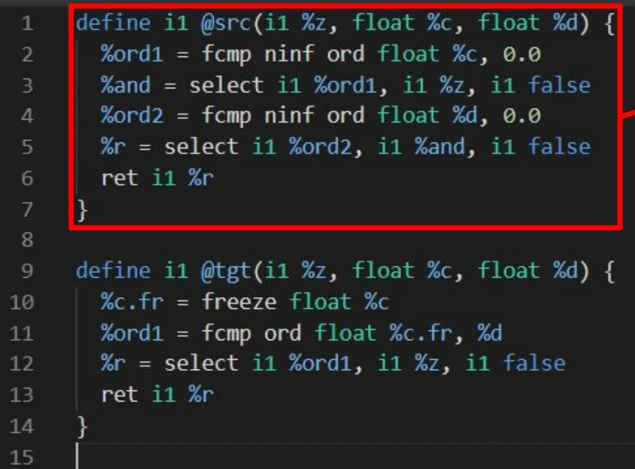
그림 안의 텍스트 · 문자 인식
define i1 @src(11 %z, float %c, float %d)
1
bordl = fcmp ninf ord float %c, 0.0
%and = select 11 %ord1, 11 %, i1 false
%ord2 =fcmp ninf ord float %d, 0.0
%r = Select i1 %ord2, i1 %and, i1 false
ret 11 %r
9
define i1 atgt(i1 %z, float %c, float %d) {
%c.fr = freeze float %c
10
%ordl = fcmp ord float %c.fr, %d
11
12
%r = select 11 %ord1, 11 %z, i1 false
ret 11 %r
13
14
}
15이미지에서 읽은 문자입니다. 코드 기호는 그림에서 확인하세요.
페이지 배치·기호·도식 확인하기

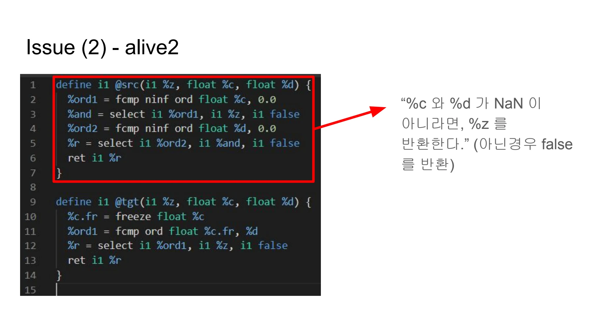
Issue (2) - alive2 / %c, %d 가 NaN 이 아니라면 %z 를 / 반환한다.
Issue (2) - alive2
%c, %d 가 NaN 이 아니라면 %z 를 반환한다.

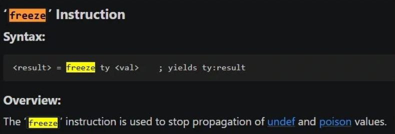
그림 안의 텍스트 · 문자 인식
freeze' Instruction Syntax; <result>= ireezel ty <val> j yields ty:result Overview: The ' freeze " instruction is used to stop propagation of undef and poison values.
이미지에서 읽은 문자입니다. 코드 기호는 그림에서 확인하세요.

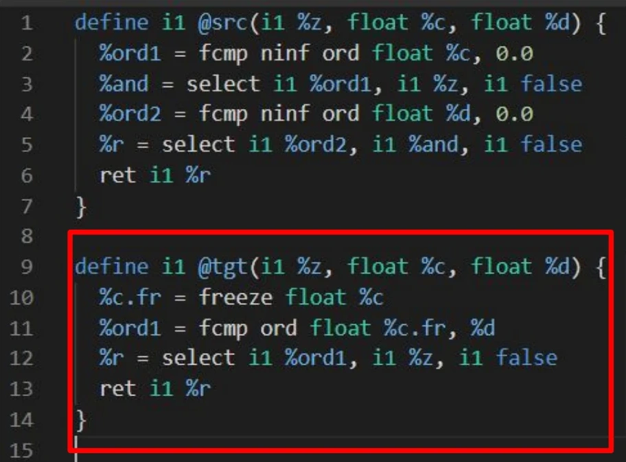
그림 안의 텍스트 · 문자 인식
define i1 @src(11 %z, float %c, float %d) {
bordl = fcmp ninf ord float %c, 0.0
%and = select 11 %ordl, 11 %, i1 false
%ord2 =fcmp ninf ord float %d, 0.0
%r = select 11 %ord2, 11 %and, i1 false
ret 11 %r
}
9
define il @tgt(i1 %z, float %c, float %d) {
10
%c.fr = freeze float %c
%ord1 = fcmp ord float %c.fr, %d
11
12
%r = select 11 %ord1, 11 %z, i1 false
13
ret 11 %r
14
15이미지에서 읽은 문자입니다. 코드 기호는 그림에서 확인하세요.

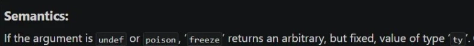
그림 안의 텍스트 · 문자 인식
Semantics: If the argument is undef or poison, 'freeze' returns an arbitrary, but fixed, value of type 'ty :
이미지에서 읽은 문자입니다. 코드 기호는 그림에서 확인하세요.
페이지 배치·기호·도식 확인하기

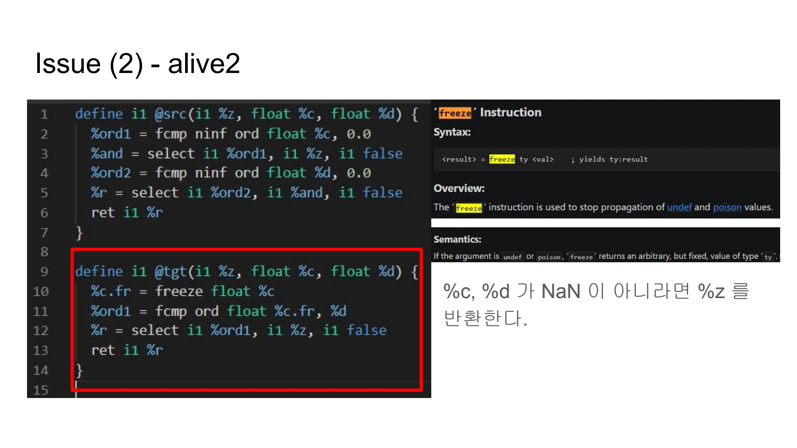
Analysis / 1. src 에서 ‘ninf’ 유/무가 어떤 차이를 / 만드는가?
Analysis
1. src 에서 ‘ninf’ 유/무가 어떤 차이를
만드는가?
2. tgt 의 fcmp 에선 ninf 가 왜
빠졌는가? 넣으면 의미가 달라지는가?
3. 왜 tgt 가 최적화인것인가?
4. 왜 freeze 는 %c 에 대해서만 ?
5. Refinement
🤔

그림 안의 텍스트 · 문자 인식
define i1 @src(i1 %, float %c, float %d) {
1
%ord1 = fcmp ninf ord float %c, 0.0
%and = select 11 %ordl, 11 %, i1 false
%ord2 =fcmp ninf ord float %d, 0.0
%r = select 11 %ord2, 11 %and, i1 false
ret 11 %r
9
define i1 @tgt(i1 %z, float %c, float %d) {
10
%c.tr = freeze float %c
11
%ord1 = fcmp ord float %c.fr, %d
12
%r = select 11 %ord1, 11 %z, i1 false
ret 11 %r
13
14
}
15이미지에서 읽은 문자입니다. 코드 기호는 그림에서 확인하세요.

페이지 배치·기호·도식 확인하기

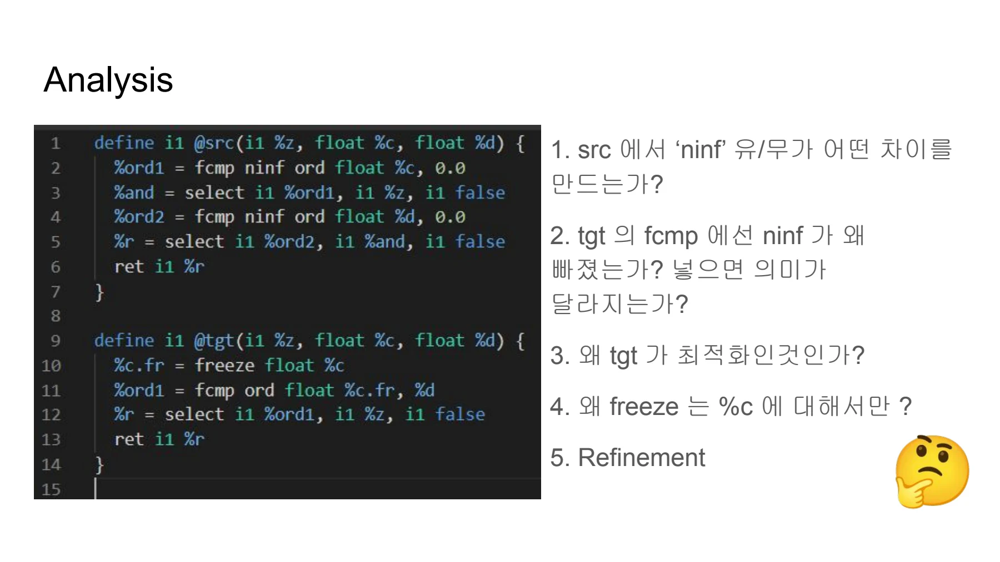
Analysis(1) / src 에서 ‘ninf’ 유/무가 어떤 차이를 / 만드는가?
Analysis(1)
src 에서 ‘ninf’ 유/무가 어떤 차이를 만드는가?
가정 : ‘%c 가 무한대인 경우’
‘ninf’가 있다면… => %ord1 은 poison
‘ninf’ 가 없다면… => %ord1 은 true (무한대는 NaN 이 아니기 때문)

그림 안의 텍스트 · 문자 인식
define i1 asrc(i1 %z, float %c, float %d) {
1
%ord1 = fcmp ninf ord float %c, 0.0
%and = select 11 %ordl, 11 %, i1 false
%ord2 = fcmp ninf ord float %d, 0.0
%r = Select 11 %ord2, 11 %and, i1 false
ret 11 %r
9
define i1 atgt(11 %z, float %c, float %d) {
10
%c.tr = freeze float %c
%ordl = fcmp ord float %c.fr, %d
11
12
%r = select 11 %ord1, 11 %z, i1 false
ret 11 %r
13
14
15이미지에서 읽은 문자입니다. 코드 기호는 그림에서 확인하세요.
페이지 배치·기호·도식 확인하기

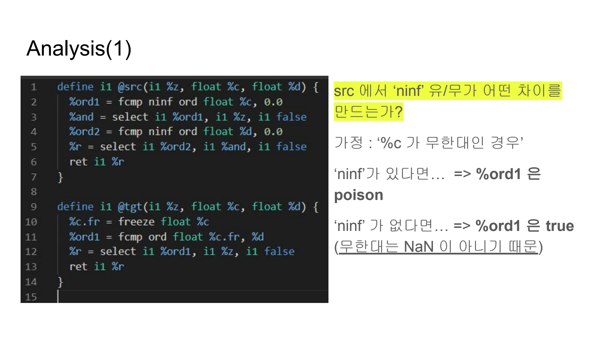
Analysis(2) / tgt 의 fcmp 에선 ninf 가 왜 빠졌는가? / 넣으면 의미가 달라지는가?
Analysis(2)
tgt | 의 | fcmp | 에선 | ninf | 가 | 왜 | 빠졌는가 | ? | |||
|---|---|---|---|---|---|---|---|---|---|---|---|
넣으면 | 의미가 | 달라지는가 | ? |
-> src 의 인자 경우의 수를 확인해야 함.

그림 안의 텍스트 · 문자 인식
define i1 asrc(i1 %z, float %c, float %d) {
1
%ord1 = fcmp ninf ord float %c, 0.0
%and = select 11 %ordl, 11 %, i1 false
%ord2 =fcmp ninf ord float %d, 0.0
%r = Select 11 %ord2, 11 %and, i1 false
ret 11 %r
}
define i1 Otgt(11 %z, float %c, float %d) {
10
%c.fr = freeze float %c
11
%ord1 = fcmp ord float %c.fr, %d
12
%r = select 11 %ord1, 11 %, i1 false
ret 11 %r
13
14
}
15이미지에서 읽은 문자입니다. 코드 기호는 그림에서 확인하세요.
페이지 배치·기호·도식 확인하기

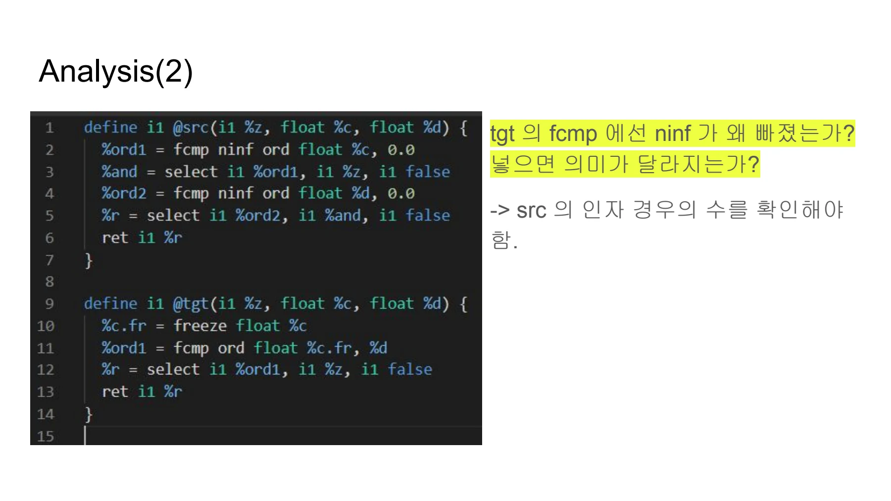
Analysis(2) / Poison(P),NaN(N),Inf(I),f(F) 라고 / 가정.
Analysis(2)
Poison(P),NaN(N),Inf(I),f(F) 라고 가정.
c(P)d(P) -> ret 는 P
c(P/I)d(NaN) -> ret 는 false
d(P/I) -> ret 는 P
src | 에서 | c | 또는 | d | 가 | Inf | 면 | 결과는 | ||
|---|---|---|---|---|---|---|---|---|---|---|
poison | 이다 | . | 단 | , "c=Inf | 이고 | d=NaN" | ||||
인 | 경우만 | 예외로 | false | 가 | 된다 | .” |

그림 안의 텍스트 · 문자 인식
define i1 asrc(11 %z, float %c, float %d) {
1
%ord1 = fcmp ninf ord float %c, 0.0
%and = select 11 %ord1, 11 %, i1 false
%ord2 = fcmp ninf ord float %d, 0.0
%r = Select 11 %ord2, 11 %and, i1 false
ret 11 %r
9
define i1 @tgt(i1 %, float %c, float %d) {
10
%c.fr = freeze float %c
%ord1 = fcmp ord float %c.fr, %d
11
12
%r = select 11 %ord1, 11 %z, i1 false
ret 11 %r
13
14
}
15이미지에서 읽은 문자입니다. 코드 기호는 그림에서 확인하세요.
페이지 배치·기호·도식 확인하기

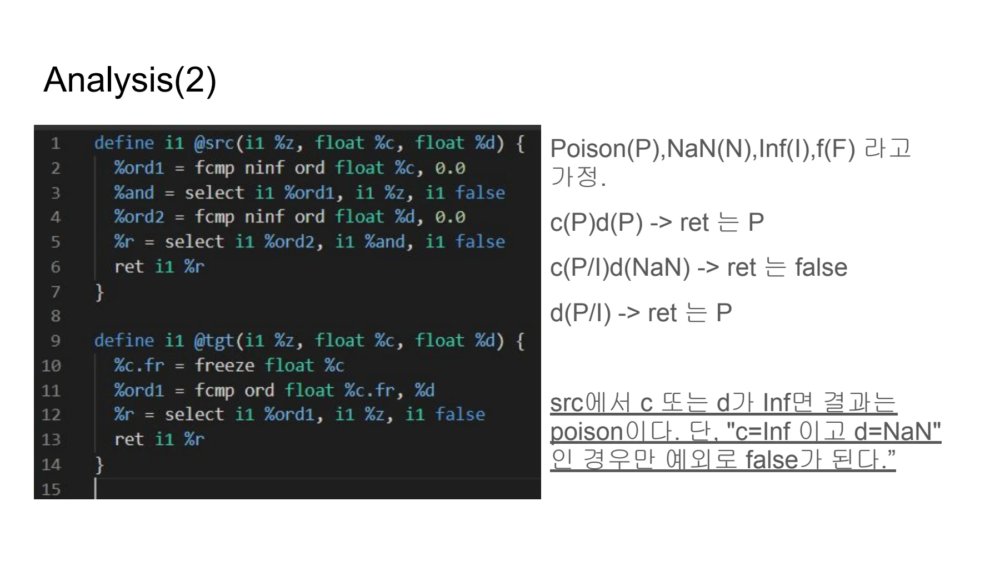
Analysis(2)
Analysis(2)

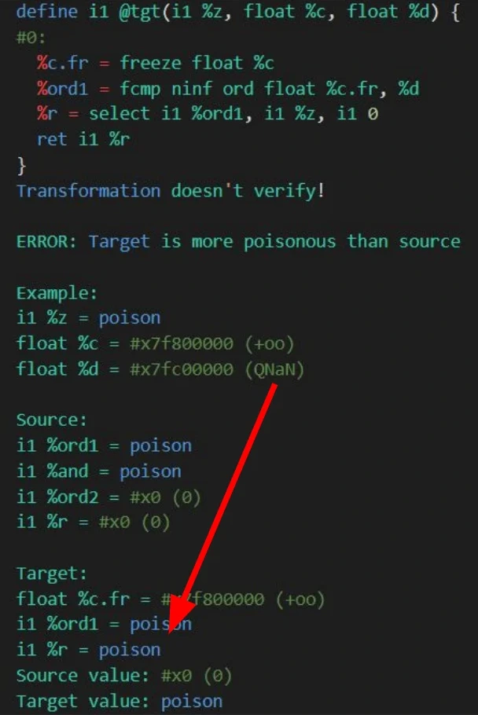
그림 안의 텍스트 · 문자 인식
detine 11 @tgt(11 %z, float %C, float %d) t #O: %C.fr = freeze float %c %ord1 = fcmp ninf ord float %c.fr, %d %r = select i1 %ord1, 11 %z, 110 ret i1 %r } Transformation doesn 't verify! ERROR: Target is more poisonous than source Example: i1 %z = poison float %C = #x7f800000 (+00) float %d = #x7fc00000 (ONaN) Source: 11 %ord1 = poison i1 %and= poi.son i1 %ord2 = #x0 (0) i1 %r = #×0 (0) Target: float %c.fr = #1f800000 (+00) i1 %ordl = poisan i1 %r = poison source value: #Xo (o) Target value: poison
이미지에서 읽은 문자입니다. 코드 기호는 그림에서 확인하세요.

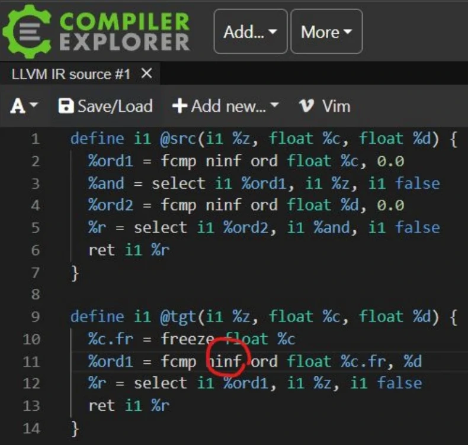
그림 안의 텍스트 · 문자 인식
COMPILER
Add... ~
More-
•EXPLORER
LLVM IR source #1 X
A~
a Save/Load + Add new....- V Vim
define i1 @src(11 %2, float %c, float %d) {
1
234
%ordl = fcmp ninf ord float %c, 0.0
%and= Select 11 %ord1, i1 %z, i1 false
%ord2 = fcmp ninf ord float %d, 0.0
%r = select i1 %ord2, 11 %and, i1 false
5
ret i1 %r
6
7
8
define i1 @tgt (11 %, float %c, float %d) {
9
%c.fr = freeze
Float %c
10
%ordi= fcmp hinf ord float %c.fr, %d
11
%r = select 11 %ord1, 11 %, i1 false
12
ret i1 %r
13
14이미지에서 읽은 문자입니다. 코드 기호는 그림에서 확인하세요.
페이지 배치·기호·도식 확인하기

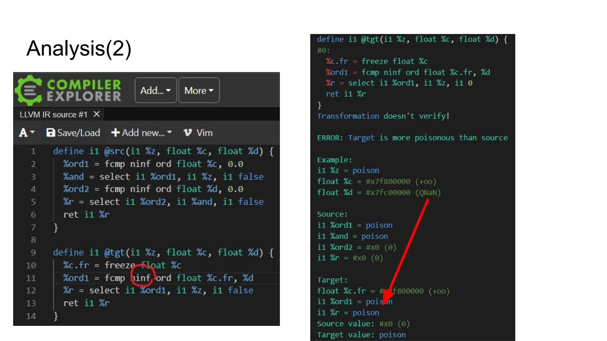
Analysis(3) - 왜 최적화인가? / WHY? / -> Freeze 는 기계어 명령을 하나도
Analysis(3) - 왜 최적화인가?
WHY?
-> Freeze 는 기계어 명령을 하나도 안 만든다. (uninitialized)
-> 2개의 NaN 검사가 하나로 합쳐짐 (ucomiss xmm0,xmm0 VS ucomiss xmm0,xmm1)

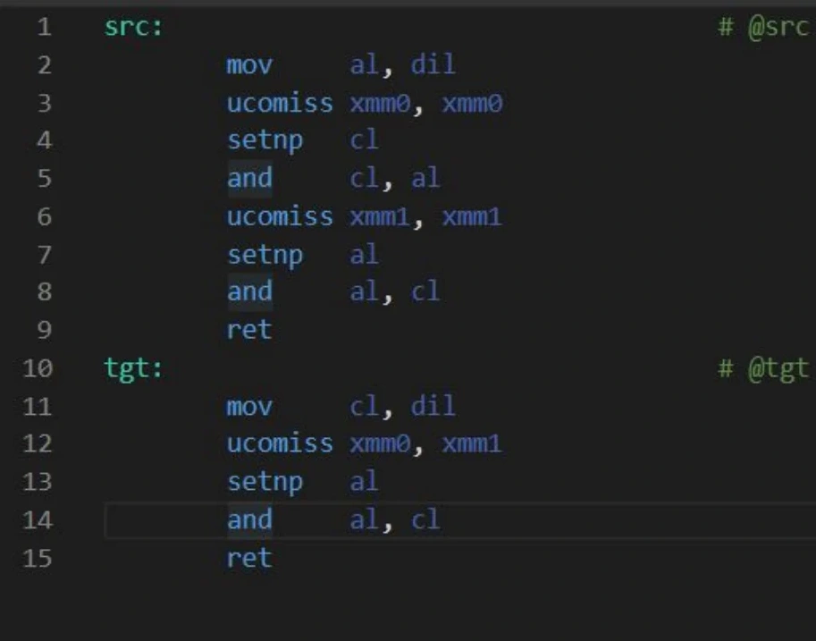
그림 안의 텍스트 · 문자 인식
# @src SrC: al, dil mOV ucomisS Xmme, xmme setnp CI and cl, al ucomiSS xmml, xmm setnp al and al, c1 8 9 ret # @tgt 10 tgt: cl, dil 11 mOV 12 ucomiss xmmQ, xmml 13 setnp al 14 and al, d 15 ret
이미지에서 읽은 문자입니다. 코드 기호는 그림에서 확인하세요.
페이지 배치·기호·도식 확인하기

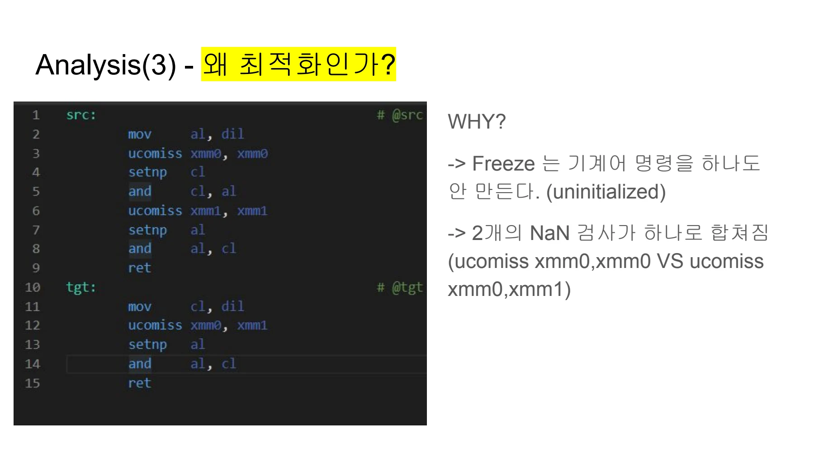
Analysis(4) / 왜 freeze 는 %c 에 대해서만 ? / src 를 보면, %d 의 undef/poison 은
Analysis(4)
왜 freeze 는 %c 에 대해서만 ?
src 를 보면, %d 의 undef/poison 은 그대로 ret poison 으로 전파된다.
만약 tgt 의 %d 의 freeze 가 수행될 경우, %ord1 이 poison 되는 경우는 존재하지 않게 된다.
-> 의미론적으로 달라서 위 형태가 올바름!

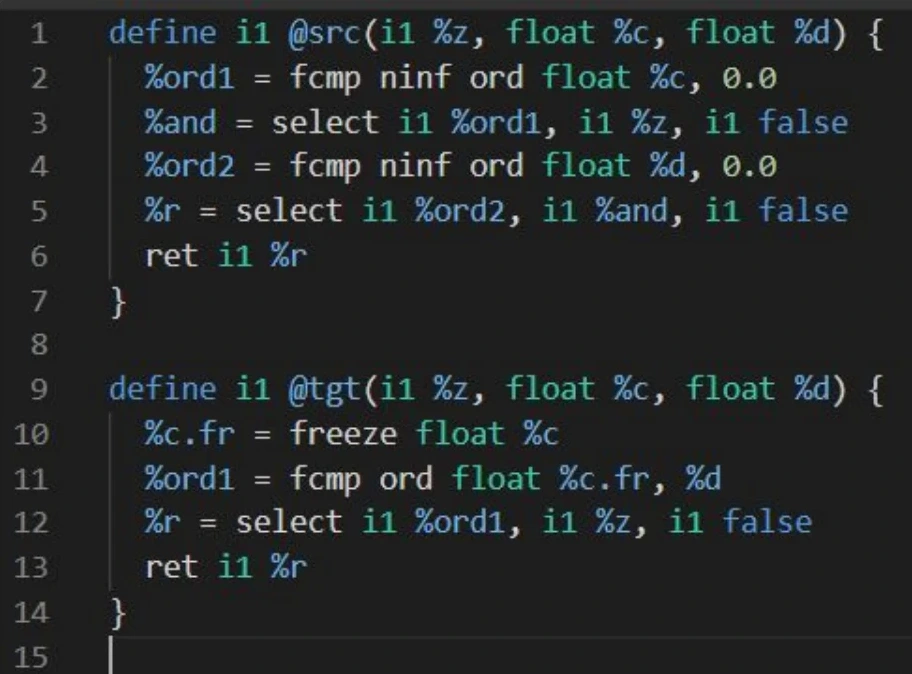
그림 안의 텍스트 · 문자 인식
define i1 @src(i1 %2, float %c, float %d) {
1
%ord1 = fcmp ninf ord float %c, 0.0
%and = select 11 %ord1, 11 %, 11 false
%ord2 = fcmp ninf ord float %d, 0.0
%r = select i1 %ord2, i1 %and, i1 false
ret i1 %r
}
9
define i1 Otgt(i1%, float %c, float %d) {
10
%c.tr = freeze float %c
11
%ord1 = fcmp ord float %c.fr, %d
12
%r = select 11 %ord1, 11 %z, i1 false
ret 11 %r
13
14
}
15이미지에서 읽은 문자입니다. 코드 기호는 그림에서 확인하세요.
페이지 배치·기호·도식 확인하기

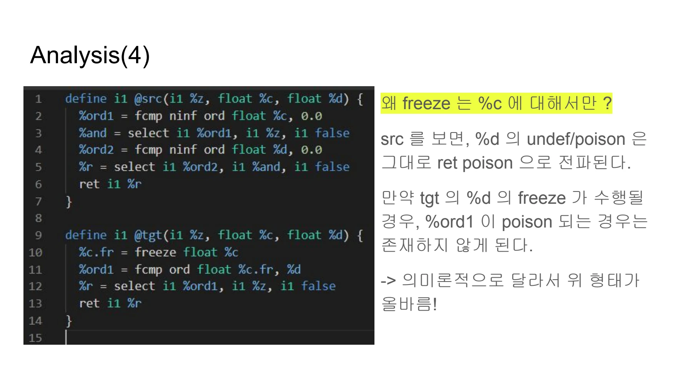
Analysis(4) / 왜 freeze 는 %c 에 대해서만 ? / src 를 보면, %d 의 undef/poison 은
Analysis(4)
왜 freeze 는 %c 에 대해서만 ?
src 를 보면, %d 의 undef/poison 은 그대로 ret poison 으로 전파된다. 라고 생각했으나… 뭔가 이상한 부분을 발견. 만약 tgt 의 %d 의 freeze 가 수행될 경우, %ord1 이 poison 되는 경우는 존재하지 않게 된다.
-> 의미론적으로 달라서 위 형태가 올바름!

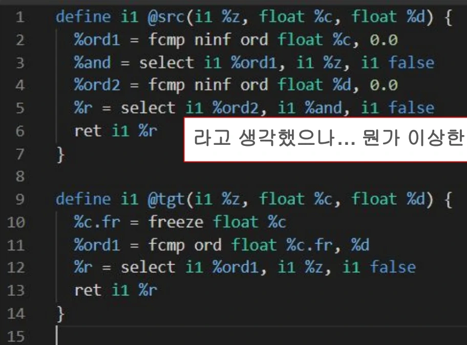
그림 안의 텍스트 · 문자 인식
define i1 @src(i1 %2, float %c, float %d) {
1
%ord1 = fcmp ninf ord float %c, 0.0
%and = select 11 %ordl, 11 %z, 11 false
%ord2 = fcmp ninf ord float %d, 0.0
%r = select i1 %ord2, i1 %and, i1 false
ret 11 %r
9
define il @tgt(i1 %z, float %c, float %d) {
10
%c.fr = freeze float %c
11
%ord1 = fcmp ord float %c.fr, %d
12
%r = select 11 %ord1, 11 %z, i1 false
13
ret 11 %r
14
15이미지에서 읽은 문자입니다. 코드 기호는 그림에서 확인하세요.
페이지 배치·기호·도식 확인하기

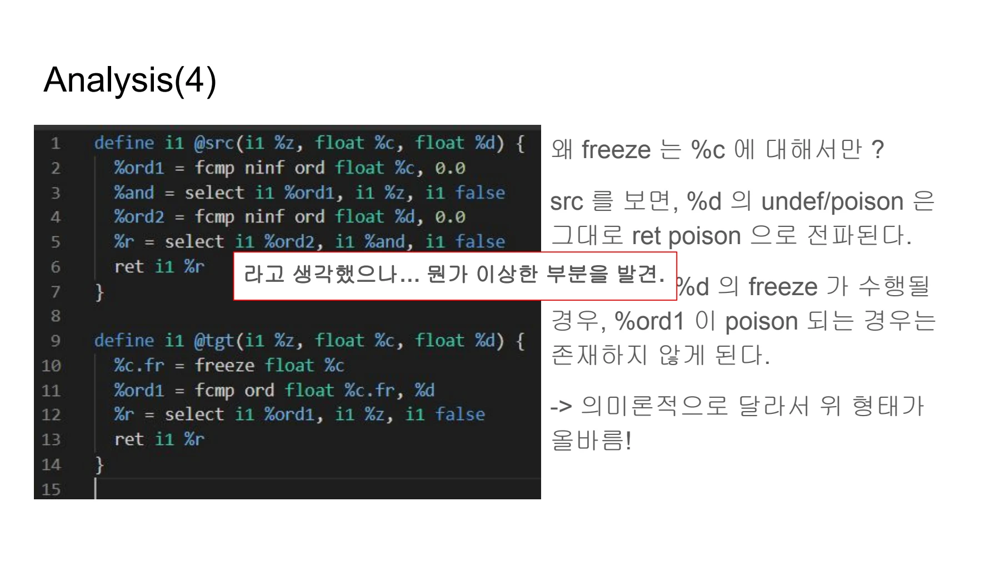
Analysis(4) / ???? %d 가 poison 인 경우, src 와 tgt 의 / 결과가 달라질 수 있는 지점이 발생한다.
Analysis(4)
???? %d 가 poison 인 경우, src 와 tgt 의 결과가 달라질 수 있는 지점이 발생한다. 그런데 alive2 는 여전히 올바르다고 판단함.

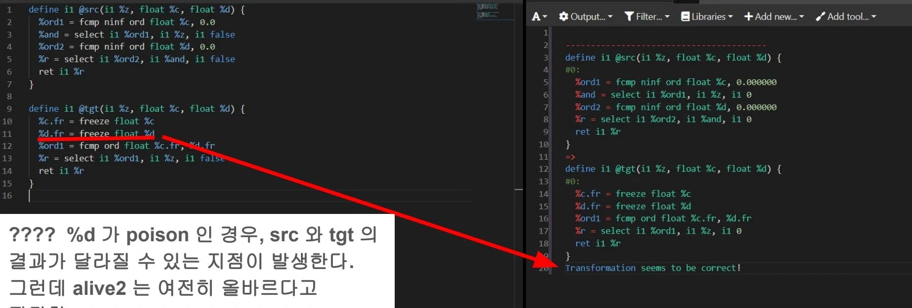
그림 안의 텍스트 · 문자 인식
define i1 @src(11 %2, float %c, float %d) {
%ord1 = fcmp ninf ord float %c, 0.0
%and = select i1 %ord1, 11 %z, il false
%ord2 = fcmp ninf ord float %d, 0.0
%r = select i1 %ord2, i1 %and, il false
ret i1 %r
define i1 @tgt(11 %, float %c, float %d) {
10
%c.fr = freeze float %c
11
%d.frl= freeze float %d
12
%ord1 = fcmp ord float %c.fr,
Mi.fr
13
%r = select i1 %ord1, i1 %z, i1 falst
14
ret i1 %r
15
16
???? %d 가 poison 인 경우, Src 와 tgt 의
결과가 달라질 수 있는 지점이 발생한다.
그런데 alive2 는 여전히 올바르다고
* Output... ~
= Libraries
+ Add new... ~
• Add tool... ~
Filter... *
define i1 @src(i1 %, float %c, float %d) {
#0:
%ordl = fcmp ninf ord float %c, 0.000000
%and = select i1 %ord1, i1 %z, 110
%ord2 = fcmp ninf ord float %d, 0.000000
%r = select i1 %ord2, i1 %and, i1 0
ret i1 %r
}
=>
define i1 otgt(i1 %z, float %c, float %d) {
#0:
%c.fr = freeze float %c
%d.fr = freeze float %d
%ordl = fcmp ord float %c.fr, %d.fr
%r = select i1%ord1, i1 %z, 110
ret i1 %r
}
Transformation seems to be correct!이미지에서 읽은 문자입니다. 코드 기호는 그림에서 확인하세요.
페이지 배치·기호·도식 확인하기

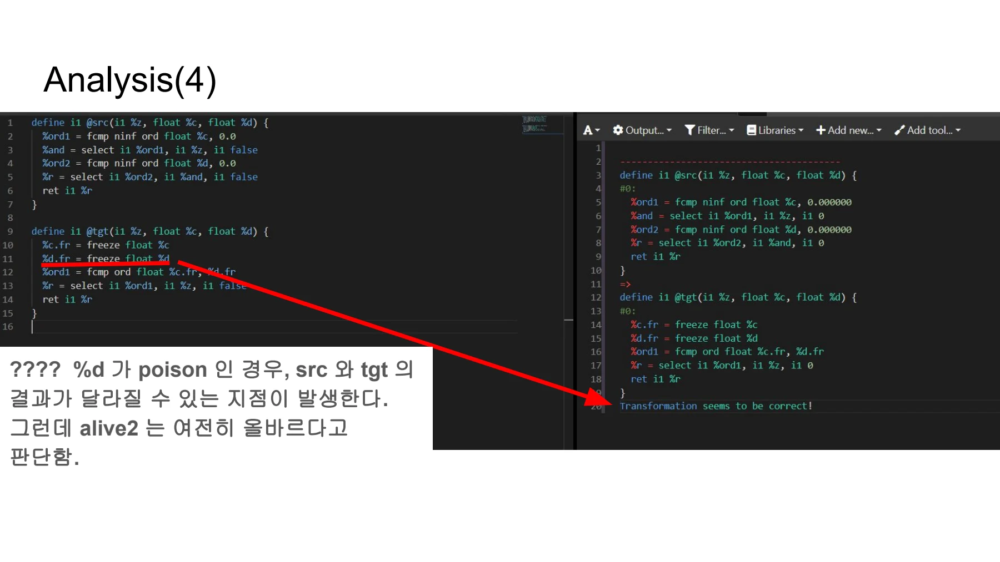
Analysis(5) - Refinement / AI 에게 표를 만들어달라고 했다. 그리고 / ‘Refine’ 이라고 하며 이는 문제가 없다고
Analysis(5) - Refinement
AI 에게 표를 만들어달라고 했다. 그리고 ‘Refine’ 이라고 하며 이는 문제가 없다고 말한다. (‘%d 에 대해서 freeze 는 왜 사용하지 않냐’ 라는 질문에 ‘불필요하다’ 고 답변. - ‘의미가 다르다’ 라는 답변을 기대했다)
=> src 와 tgt 식 의미가 달라지면 안된다고 생각했기 때문 !!

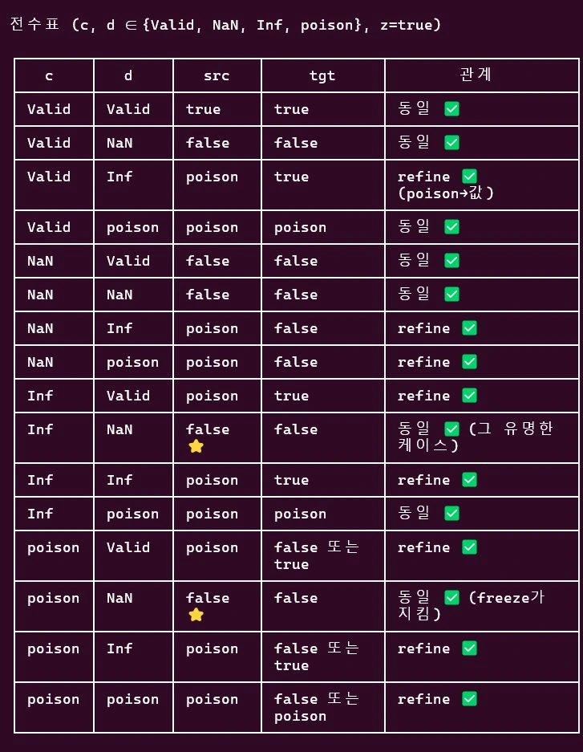
그림 안의 텍스트 · 문자 인식
전수표 (c, dEtValid, NaN, Inf, poisont, z=true) SrC Valid VaLid true Valid false NaN VaLid Inf poison poison Valid poison NaN Valid false NaN NaN false NaN Inf poison NaN poison poison Inf valid poison Inf NaN false Inf Inf poison Inf poison poison poison Valid poison poison NaN false poison Inf poison poison poison poison tgt true false true poison false false false false true false true poison false 또는 true false false 또는 true false 또는 poison 관계 동일 ✓ 동일 V refine V (poison+값) 동 일 " 동 일 " 동일 ✓ refine V refine V refine V 동이스 (그 유명한 refine V 동 일 refine y 동일 (freeze가 지킴) refine < refine V
이미지에서 읽은 문자입니다. 코드 기호는 그림에서 확인하세요.
페이지 배치·기호·도식 확인하기

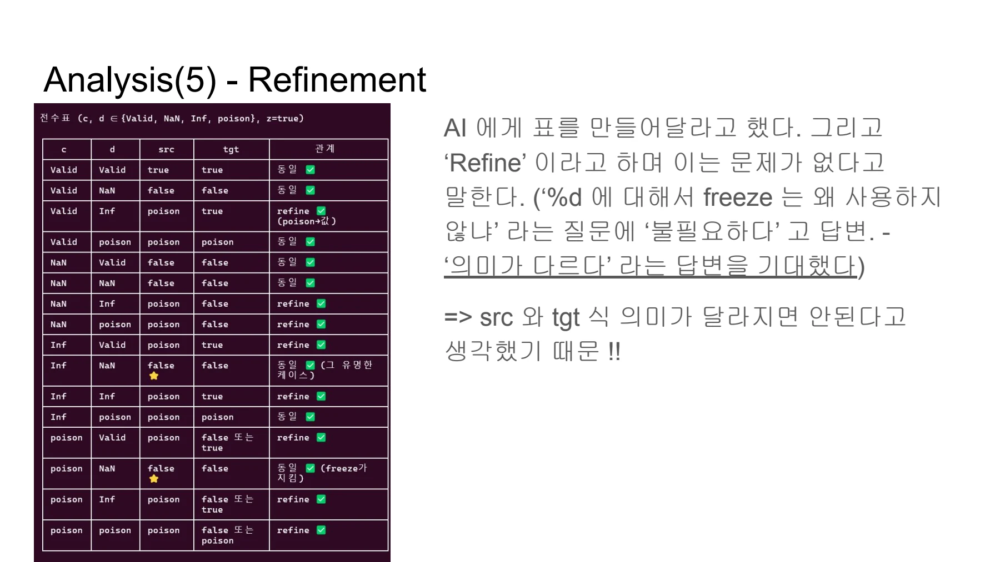
Analysis(5) - Refinement / 컴파일러 정확성은 "같음"이 아닌 “poison -> / 구체값 방향의 refinement만 지키면 됨”.
Analysis(5) - Refinement
컴파일러 정확성은 "같음"이 아닌 “poison -> 구체값 방향의 refinement만 지키면 됨”.
즉, %d 의 freeze는 그 허용된 방향으로 더 정의되게 만들 뿐이라 correct지만, c만으로 이미 correct하므로 불필요해서 뺀 것.

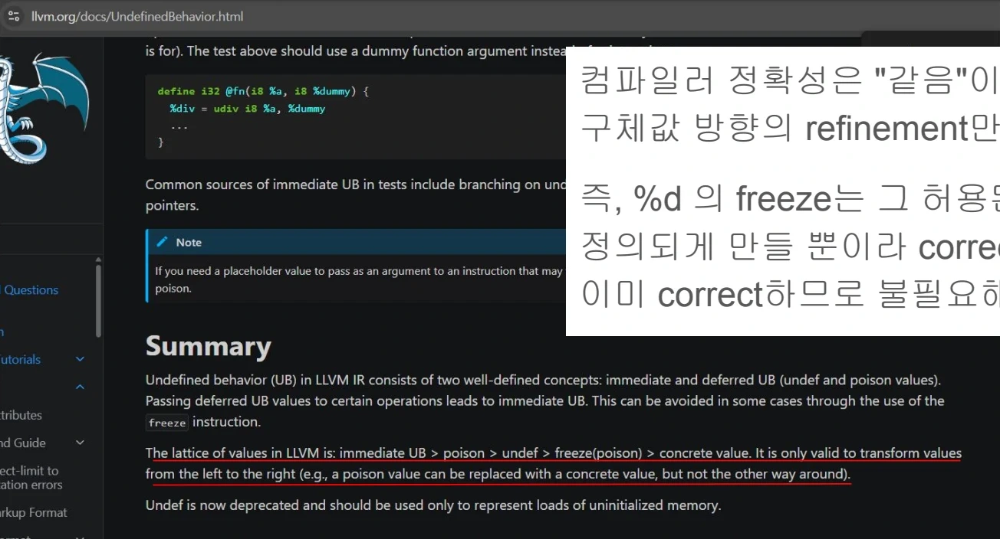
그림 안의 텍스트 · 문자 인식
Ilvm.org/docs/UndetinedBehavior.html
is for). The test above should use a dummy function argument instea
컴파일러 정확성은 "같음"이 아닌 "poison ->
define 132 @fn(18 %a, 18 %dummy) {
%div = udiv 18 %a, %dummy
구체값 방향의 refinement만 지키면 됨".
Questions
utorials
tributes
d Guide
ect-limit to
ation errors
rkup Format
Common sources of immediate UB in tests include branching on una
즉, %d 의 freeze는 그 허용된 방향으로 더
pointers.
• Note
정의되게 만들 뿐이라 correct지만, c만으로
If you need a placeholder value to pass as an argument to an instruction that may
poison.
이미 correct하므로 불필요해서 뺀 것.
Summary
Undefined behavior (UB) in LLVM IR consists of two well-defined concepts: immediate and deferred UB (undef and poison values).
Passing deferred UB values to certain operations leads to immediate UB. This can be avoided in some cases through the use of the
freeze instruction.
The lattice of values in LLVM is: immediate UB > poison > undef > freeze(poison) > concrete value. It is only valid to transform values
from the left to the right (e.q., a poison value can be replaced with a concrete value, but not the other way around).
Undef is now deprecated and should be used only to represent loads of uninitialized memory.이미지에서 읽은 문자입니다. 코드 기호는 그림에서 확인하세요.
페이지 배치·기호·도식 확인하기

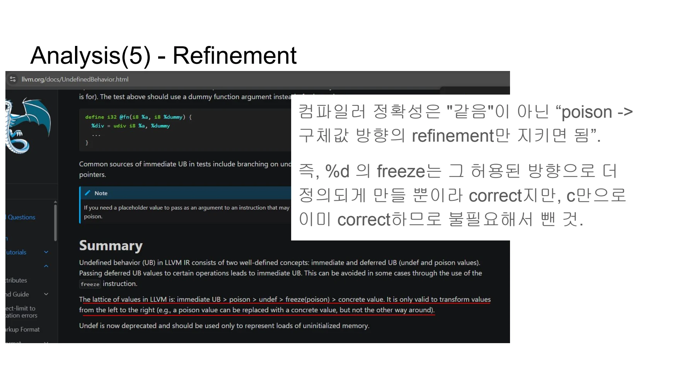
Patch / 이미 fold 는 / 존재함.
Patch
이미 fold 는 존재함.
기존 src 에 따르면 first(%d) 가 NaN 인 경우, second(%c) 가 무엇이든 false ret 을 갖는다.
만약 tgt 의 동시 fcmp ord 직전에 freeze 를 하지 않는 경우, Poison(c) - NaN(d) 경우엔 false 가 아닌 poison ret 을 갖는다.
이는 이전의 ‘한쪽 방향의 Refinement 에 위배되는 방향’ 으로, freeze 가 필요하다는 맥락이다.

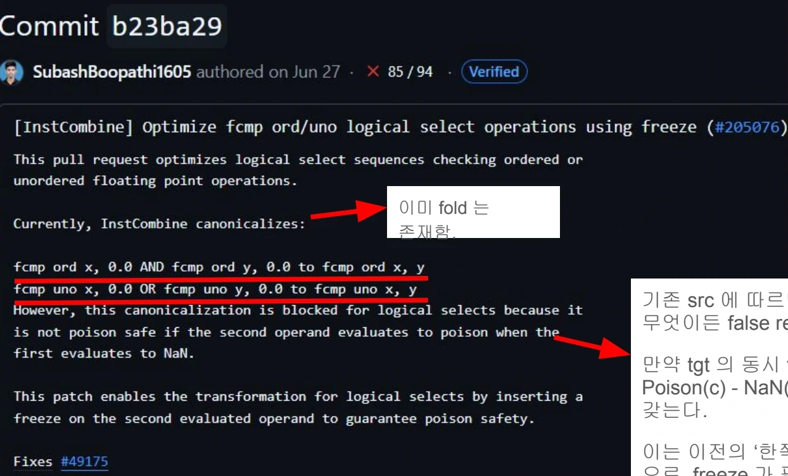
그림 안의 텍스트 · 문자 인식
Commit b23ba29 SubashBoopathi1605 authored on Jun 27 - X 85/94 Verified [Instcombine] optimize fcmp ord/uno logical select operations using freeze (#205076) This pull request optimizes logical select sequences checking ordered or unordered floating point operations. 이미 fold 는 Currently, InstCombine canonicalizes: 존재학 fcmp ord x, 8.0 AND fcmp ord y, 0.0 to fcmp ord x, y fcmp uno x, 0.0 OR fcmp uno y, 0.0 to fcmp uno x, y However, this canonicalization is blocked for 1ogical selects because it 무엇이든 false ret 을 갖는다. is not poison safe if the second operand evaluates to poison when the first evaluates to Na. This patch enables the transformation for logical selects by inserting a 갖는다. freeze on the second evaluated operand to guarantee poison safety. Fixes #49175
이미지에서 읽은 문자입니다. 코드 기호는 그림에서 확인하세요.

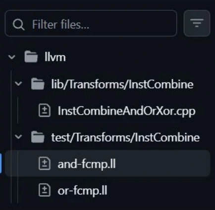
그림 안의 텍스트 · 문자 인식
Q Filter files... livm lib/Transforms/InstCombine InstCombineAndOrXor.cpp test/Transforms/InstCombine | and-fcmp:ll t or-fcmp:ll
이미지에서 읽은 문자입니다. 코드 기호는 그림에서 확인하세요.
페이지 배치·기호·도식 확인하기

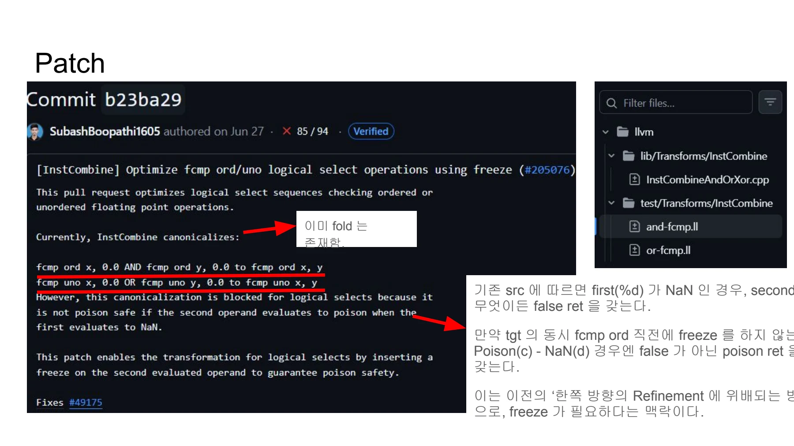
Patch / 이미 fold 는 / 존재함.
Patch
이미 fold 는 존재함.
동시에 ‘canonicalization is blocked for …’ 는 기존 최적화를 막는다는 늬앙스.
패치 코드에서 확인할 수 있다.

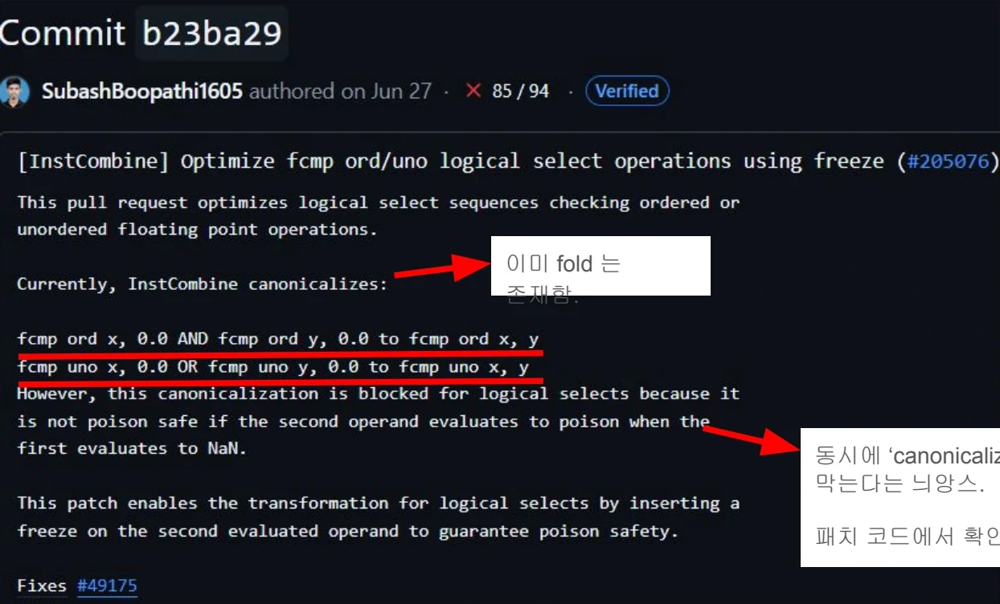
그림 안의 텍스트 · 문자 인식
Commit b23ba29 SubashBoopathi1605 authored on Jun 27 - X 85 /94 Verified [Instcombine] optimize fcmp ord/uno logical select operations using freeze (#205076) This pull request optimizes logical select sequences checking ordered or unordered floating point operations. 이미 fold 는 Currently, InstCombine canonicalizes: 조대학 fcmp ord x, 8.0 AND fcmp ord y, 0.0 to fcmp ord x, y fcmp uno x, 0.0 OR fcmp uno y, 0.0 to fcmp uno x, y However, this canonicalization is blocked for 10gical selects because it is not poison safe if the second operand evaluates to poison when the first evaluates to NaN. 막는다는 늬앙스. This patch enables the transformation for logical selects by inserting a freeze on the second evaluated operand to guarantee poison safety. 패치 코드에서 확인할 수 있다. Fixes #49175
이미지에서 읽은 문자입니다. 코드 기호는 그림에서 확인하세요.
페이지 배치·기호·도식 확인하기

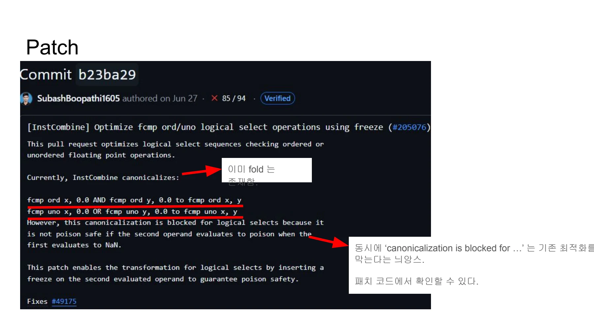
Patch / 기존 fold 를 막는 !IsLogicalSelect 를 제거함. / LHS, RHS : fcmp ord c,0 / fcmp ord d,0
Patch
기존 fold 를 막는 !IsLogicalSelect 를 제거함.
LHS, RHS : fcmp ord c,0 / fcmp ord d,0
LHS0, RHS0 : c,d
LHS1, RHS1 : 0.0, 0.0
freeze(Y=RHS0=d) => poison 을 확정값으로 처리!
FMF = LHS->getFastMathFlags() & RHS->getFastMathFlags() 에서 nInf 를 가져왔다.
즉, FMF 에 여전히 nInf 가 남아있을 수 있으며 만약 c 가 Poison 이 아닌 Inf 값이라면,fcmp ord LHS0, Y 는 반드시 Poison 이 되고, 기존 src 의 의미에서 벗어난다. fcmp ord LHS0, Y 생성!

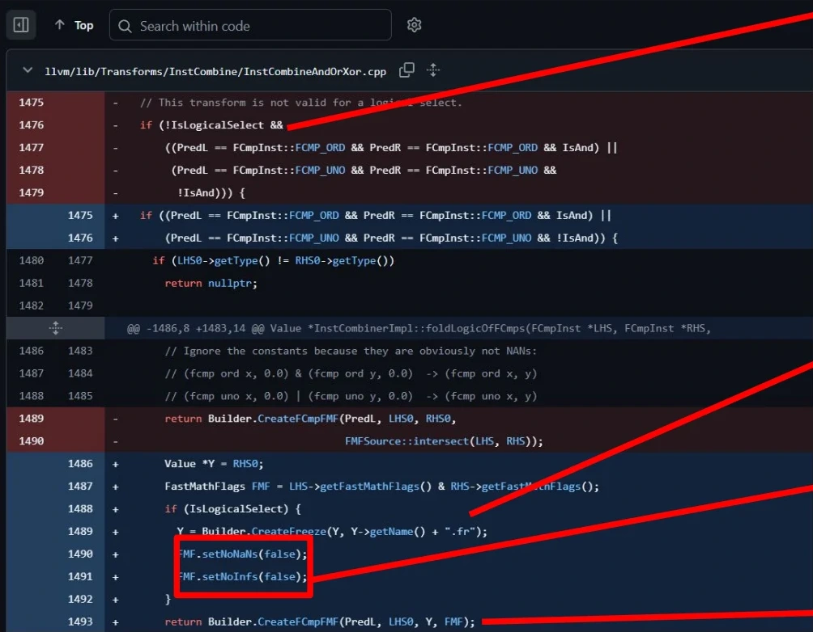
그림 안의 텍스트 · 문자 인식
7 Top
• Search within code
다
1lvm/11b/Transforms/InstCombine/InstCombineAndOrxor.cpp
1475
1476
1477
1478
1479
1475
1476
1480
1477
1481
1478
1482
1479
1486
1483
187
1484
1488
1485
1489
1490
1486
1487
1488
18g
1490
1491
1492
1493
// This transfonm is not valid fon .a
if(!IsLogicalSelect &&
((PredL - FCmpInst::FCMP_ORD && PredR
FCmpInst: :FCMP_ORD && IsAnd) II
(PredL -- FCmpInst::FCMP_UNO && PredR -- FCmpInst::FCMP_UNO &&
!IsAnd))) {
if ((PredL a FCmpInst::FCMP_ORD && PredR == FCmpInst::FCMP ORD && IsAnd) ||
(PredL -- FCmpinst::FCMP_UNO && PredR -- FCmpinst::FCMP_UNO && !IsAnd》){
if (LHSO->getType() I-RHS0->getType())
return nullptr;
e -1486,8 +1483,14 Value *InstCombinenimpl: :foldLogicOfFCmps(FCmpInst *LHS, FCmpInst *RHS,
// Ignore the constants because they are obviously not NANs:
// (fcmp ord x, 0.0) & (fcmp ond y, 0.0) -> (fcmp ond x, y)
// (fcmp uno x, 0.0) | (fcmp uno y, 0.0)
-> (fcmp uno x, y)
retunn Builder.CreateFCmpFMF(PredL, LHSO, RHSO,
FMFSource::intersect(LHS, RHS));
Value *Y - RHSO;
FastMathrlags FMF - LHS->getFastMathFlags() & RHS->getFast
cnFlags();
if(IsLogicalselect) {
ze(Y, Y->getName() +
fr");
=MF.setNoNaNs(false):
MF.setNoTnfs(false)
return Builder.CreateFCmpFMF(PredL, LHSO, Y, FMF);이미지에서 읽은 문자입니다. 코드 기호는 그림에서 확인하세요.
페이지 배치·기호·도식 확인하기

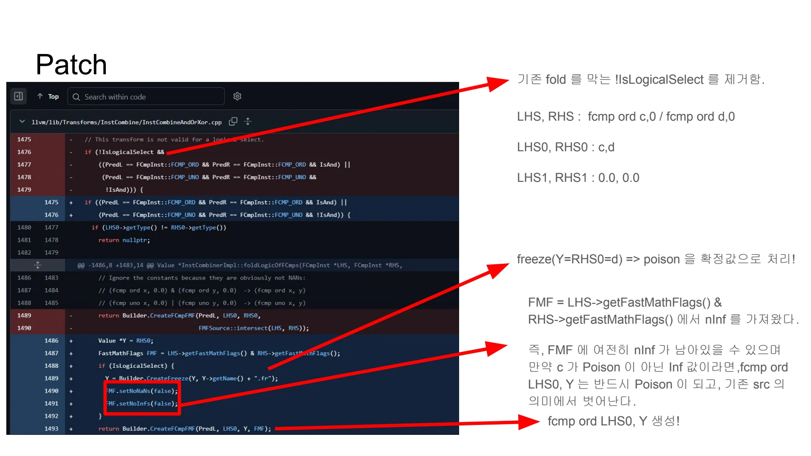
Reference / Issue https://github.com/llvm/llvm-project/issues/49175 / Patch Commit https://github.com/llvm/llv
Reference
Issue https://github.com/llvm/llvm-project/issues/49175 Patch Commit https://github.com/llvm/llvm-project/pull/205076/commits PR https://github.com/llvm/llvm-project/commit/b23ba298af84d56be149350bf6 17dc869c1fb42c LangRef https://llvm.org/docs/LangRef.html
페이지 배치·기호·도식 확인하기

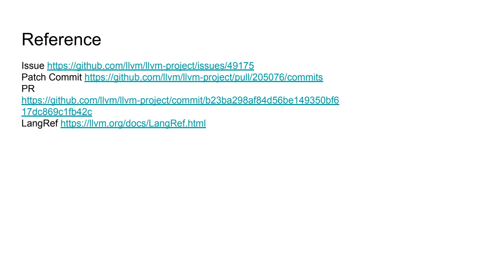
핵심 원리와 편집 주석
ord와 uno
fcmp ord는 두 입력이 모두 NaN이 아닐 때 참이다. fcmp uno는 하나라도 NaN이면 참이다. 따라서 fcmp ord x, 0.0은 x의 NaN 여부를 검사한다.
여러 비교와 논리적 선택을 하나의 비교로 합치려면 NaN뿐 아니라 poison과 fast-math 조건도 확인해야 한다.
선택이 가리는 poison
select는 선택하지 않은 값의 poison을 결과로 전달하지 않는다. 원래 식이 한쪽 비교를 건너뛰는 구조라면, 두 입력을 바로 비교하는 새 식이 poison을 새로 노출할 수 있다.
freeze는 poison 또는 undef를 고정된 값으로 바꾼다. 새 비교 전에 적절한 입력을 freeze하면 원래 정의된 결과를 보존할 수 있다.
같음과 refinement 구분
최적화는 원본이 정의한 동작을 새 식에서도 보존해야 한다. 원본이 poison인 경우에 새 식이 더 구체적인 값을 반환하는 것은 허용될 수 있다.
반대 방향은 다르다. 원본이 false처럼 정의된 값을 반환하는 입력에서 새 식이 poison을 만들면 정확성을 위반한다.
자료에는 처음의 등식 중심 설명을 수정하고 이 방향성을 이해한 과정이 남아 있다.
freeze와 플래그를 함께 검토하기
- 원래 select가 어느 입력의 poison을 가리는지 확인한다.
- 어느 피연산자를 freeze하는지 실제 matcher의 순서와 대조한다.
- 두 비교의 fast-math flags를 결합할 때 ninf가 남는지 확인한다.
- NaN·Inf·poison 조합에서 src가 정의된 값을 내는 경우를 우선 확인한다.
문서 전문과 버전
- PDFPDF 원자료 · 25쪽LLVM_Issue_49175.pdf
각 자료는 별도의 버전입니다. 같은 주제라도 구현 상태·설명 범위·수치가 다를 수 있습니다.
관련 이슈와 PR
구현·병합 상태와 측정값은 해당 제출 자료의 작성 시점 기준입니다.